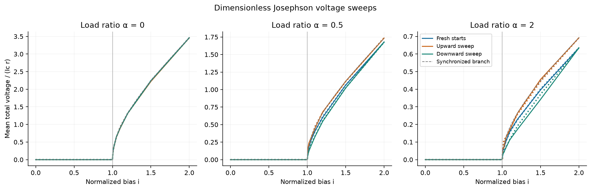
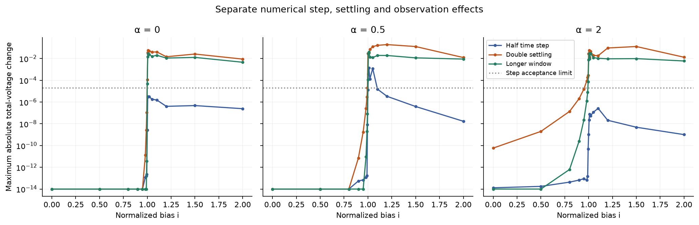
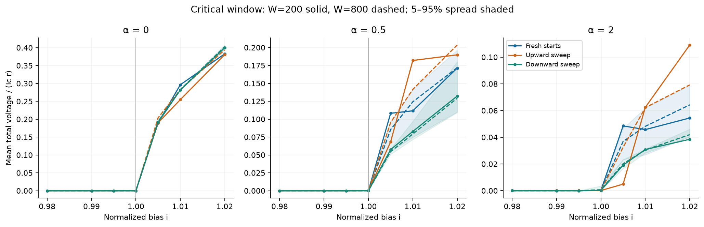
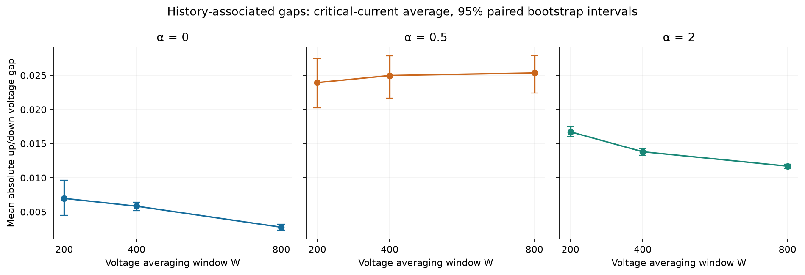
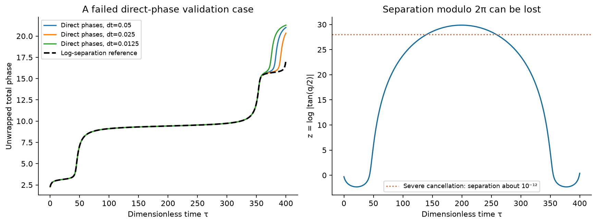

STREAMS AND ROCKS · COMPLETED NUMERICAL EXTENSION · 10 OCTOBER 2026
Runnable code, tests and recorded arrays · Resolved regime table · Reference summary and uncertainty · Original protocol and coordinate amendment · Additional refinement protocol
The original step comparison changes total voltage by as much as 0.00137, exceeding the declared 2×10⁻⁵ limit in part of the α=0.5 downward sweep. Further halving to Δτ=0.0125 and 0.00625, plus independently integrated full-history references, resolves that case. The final finest-step/reference discrepancy there is 5.53e-07. The results below distinguish that numerical problem from the larger settling and observation effects.
Upward, downward and freshly initialized runs give different finite-observation voltages after refinement. The reference table shows which differences decrease with a longer window and which remain in this pilot. Full-history references cover all original currents and starting draws; further fixed-step refinement is targeted to the history that failed its original gate.
These results test the earlier sweep caption quantitatively. They do not establish an additional physical memory law or asymptotic hysteresis. In this model, the two phases and the prescribed current determine the future; a scalar averaged voltage does not fully specify those phases.

The supplied circuit is interpreted as two identical overdamped resistively shunted Josephson junctions in series, each with shunt r, with a shared load R across the pair. The conventional RSJ approximation neglects junction capacitance; see Couëdo et al. (2020). More general loaded arrays are treated by Wiesenfeld and Swift (1995); their LRC model is background, not an experimental validation of this idealized pair. No capacitance, inductance, thermal evolution, noise or junction mismatch is included here.
The shared branch carries normalized current αvtotal. α=0 removes that load (R→∞ with r fixed). Voltage averages use unwrapped phase increments over the observation window, retaining both individual junction voltages and their sum.
The resistors dissipate nonnegative energy. Input work, potential change and accumulated dissipation are checked for each segment. This is a driven dissipative system, so its potential energy alone is not conserved. On the invariant synchronized branch, v̄total=2√(i²−1)/(1+2α) for i>1, and the locked branch has zero voltage below threshold. The single-cycle period 2π(1+2α)/√(i²−1) grows near i=1, making a fixed observation interval particularly sensitive there.
Three load ratios (0, 0.5, 2), 17 currents from 0 to 2, and 12 independent phase pairs drawn uniformly from [−π,π)² with seed 20261010. Current samples are concentrated between 0.98 and 1.02. Each pair is reused across conditions as a paired control; it is not counted as a new independent replicate for every current.
| Setting | Step Δτ | Settling time S | Averaging time W |
|---|---|---|---|
| base | 0.05 | 100.0 | 200 |
| half_step | 0.025 | 100.0 | 200 |
| double_settle | 0.05 | 200.0 | 200 |
| both | 0.025 | 200.0 | 200 |
Up and down are separately initialized monotone sweeps. Each next current starts from the endpoint after S+200 at the preceding current. Fresh runs reset to the original phases at every current. Settling is a prescribed waiting interval, not a claim that every trajectory has reached its asymptotic regime. The four settings use identical current grids and starting draws; changing S also changes the accumulated history of a continuation sweep.
For the finest step with S=200, each stored post-settling state is replayed for W=800. Nested W=200, 400 and 800 averages and four disjoint 200-unit blocks are measured. Longer observations do not feed back into the primary sweep continuation. All quantities are dimensionless; no physical component values or voltages in volts are inferred.

| α | Original max step change | Reference max settling change | Reference max W change | Reference critical up/down gap, W=200 [95% CI] | Reference critical up/down gap, W=800 [95% CI] |
|---|---|---|---|---|---|
| 0 | 3.17e-06 | 0.0548 | 0.0281 | 0.006976 [0.004493, 0.009614] | 0.002756 [0.002307, 0.003209] |
| 0.5 | 0.00137 | 0.192 | 0.0403 | 0.023937 [0.020211, 0.027473] | 0.025355 [0.022438, 0.027911] |
| 2 | 2.64e-07 | 0.128 | 0.0299 | 0.016732 [0.016001, 0.017506] | 0.011709 [0.011364, 0.012023] |
The first three columns are maxima across all currents, modes and starting draws; they are sensitivities, not error bars. The gap is the mean absolute up-minus-down voltage difference over the seven sampled currents from 0.98 through 1.02, first computed separately for each starting draw. Intervals use 4,000 paired bootstrap resamples of the 12 independent draws (seed 10012026), preserving currents and modes together. These intervals describe this initial-phase distribution, not device-to-device uncertainty. A gap near a precision floor should not be interpreted as physically nonzero.


Phases can approach equality modulo 2π so closely that rounding and subtraction errors severely distort their small separation, and can eventually erase it. That separation can later grow again. Merely halving the time step does not reliably recover information already lost to rounding. An adaptive solver using the same ill-conditioned phase coordinates can also be affected. The illustrated reference reaches z≈29.9, corresponding to a phase separation modulo 2π of roughly 4×10⁻¹³.
These are algebraically equivalent equations on the invariant initial phase strip, not a new circuit model. They preserve small separations internally even when reconstructed phases round to the same value modulo 2π. Voltage is still measured from unwrapped phases. Tests compare both formulations before severe conditioning develops, validate the transformed velocities against Kirchhoff's equations, and retain the synchronized special case. Acceptance thresholds were fixed before production and were not relaxed after failure.

The original fixed-step matrix is retained below, including its failed step gate. Passing fresh-start checks and an energy budget did not ensure an entire continuation history was accurate. The original fixed-step means are therefore labeled as the initial comparison; resolved gap estimates use separate full-history references.
| Check | Measured | Acceptance limit | Status |
|---|---|---|---|
| max absolute voltage step difference | 0.0013692310907265498 | 2e-05 | FAIL |
| max normalized power balance residual | 1.99636720724635e-08 | 2e-06 | PASS |
| max reference voltage error | 2.4310199409072197e-09 | 2e-06 | PASS |
| max analytic cycle relative error | 2.832647619444968e-09 | 2e-06 | PASS |
| finite and nonnegative dissipation | — | — | PASS |
| window replay reproduces W200 | 0.0 | 1e-11 | PASS |
Additional completed checks: DOP853 replays both entire S=100 and S=200 sweeps from the original initial conditions (relative tolerance 10⁻¹¹, absolute tolerance 10⁻¹², maximum step 0.5). The α=0.5, S=200 downward histories are rerun with fixed steps 0.0125 and 0.00625 and with a tighter DOP853 reference (10⁻¹²/10⁻¹³, maximum step 0.25). All four follow-up gates pass. The finest-step pair and finest-step/reference limits remain 2×10⁻⁵; the reference-tolerance limit is 2×10⁻⁶. All long-window reference trajectories are cross-checked with fixed RK4 from exactly the same settled states. These checks do not certify arbitrary longer histories or other circuits.
| Follow-up comparison | Measured discrepancy |
|---|---|
| dt0125 | {'max_individual_voltage_difference': 6.030254803016111e-06, 'max_total_voltage_difference': 8.849378814367037e-06} |
| dt00625 | {'max_individual_voltage_difference': 3.76706395285864e-07, 'max_total_voltage_difference': 5.525010828913435e-07} |
| tighter | {'max_individual_voltage_difference': 3.125987860230772e-08, 'max_total_voltage_difference': 4.584581575484137e-08} |
| finest_step_pair | {'max_total_voltage_difference': 8.296877731475694e-06} |
| window_RK4_reference_max_error | 1.4875957354831826e-08 |
Independent validation uses 24 new initial draws from seed 20261011, covering α=0,0.5,2 and i=0.99,1,1.005,1.2. Fixed RK4 results are compared with DOP853 in the stable coordinates (relative tolerance 10⁻¹¹, absolute tolerance 10⁻¹², maximum step 0.5). Nine exact synchronized-cycle checks cover the three loads and i=1.005,1.2,2. Eighteen automated tests cover circuit balance, passive dissipation, stationary and periodic solutions, coordinate equivalence, small separation, unwrapped voltage, refinement and replay.
Original four-setting voltages · Resolved reference voltages · Reference means and intervals · Reference nested windows · Reference disjoint blocks · Independent validation · Original numerical gates · Additional refinement gates · Automated test record. Source, protocol and recorded-array hashes are in the code package; arrays retain initial, settled and endpoint states and sampled histories.
The current-dependent Josephson phase dynamics, the resistive load, different phase arrangements, critical slowing and finite observation windows explain the responses available in this model. At α=2 and i=1.005 the synchronized period is about 314 time units: W=200 does not even cover one cycle and W=800 covers only about 2.6. Dissipation and coupling are linked by the circuit equations; increasing α does not isolate a universal interaction-strength variable independently of transport and damping.
The model also preserves extraordinarily small phase differences in an exactly identical, noiseless circuit. Whether such sensitivity survives component mismatch and environmental fluctuations is a physical question that this idealized calculation cannot answer.
Previous observations can help infer phase information missing from an instantaneous scalar voltage. That is consistent with the broader organization/history question, but this sweep does not fit or validate a history-based predictor against a complete-state predictor. It supplies no evidence that fluid markers interact like junction phases, nor that the fluid has this circuit's phase states. The initial numerical failure also shows why apparent history effects require a precision check as well as an energy check.